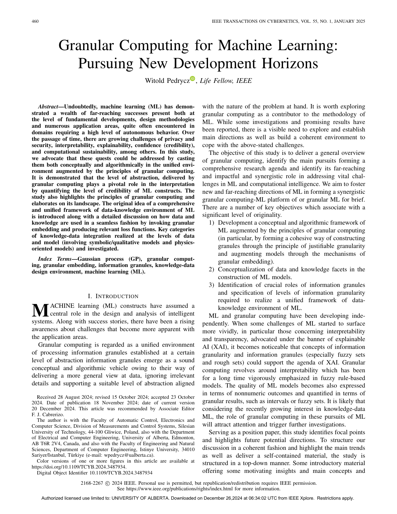

0. 名称消歧与论文来源确认
0.1 当前文档主要对应哪篇论文
当前这份文档主要对应的是：
- Pedrycz, IEEE Transactions on Cybernetics 2025, Granular Computing for Machine Learning: Pursuing New Development Horizons
本文默认讨论的 Granular Computing for ML，都指这篇论文提出的那套总体视角：
- 不再只问模型“准不准”；
- 还要问模型输出是否具有合适的抽象层次、可信度和可解释性；
- 并进一步问知识与数据能否在统一的 granular 框架中协同工作。
0.2 它在阅读路线里的位置
如果把 Survey -> Logic-Net -> Semantic Loss -> DL2 看成“逻辑约束主线”，那么这篇论文开启的是另一条主线：
即使模型满足约束，它给出的结果是否仍然过于尖锐、过于精确、过于缺少可信结构？
换句话说：
- Logic 线主要关心
constraint satisfaction - Granular 线则开始关心
credibility / abstraction / uncertainty-aware representation
因此，这篇论文不是去替代 Logic-Net、Semantic Loss 或 DL2，而是在 informed ML 框架内把问题空间扩宽：
- 从“规则有没有被满足”
- 扩展到“结果是否以合适粒度表达”
- 再扩展到“知识和数据是否能在同一设计环境里协同出现”
0.3 本文默认读者起点
下面的写法默认你可以接受数学公式，但不预设你已经懂下面这些词：
- 信息粒
information granule - 粒度
granularity - 模糊集
fuzzy set - 高斯过程
Gaussian process, GP
因此所有后续核心符号都会在第一次出现时定义，不要求你先查外部资料。
0.5 最小概念设定与记号
这一节只做一件事：把全文后面会反复出现的最小数学骨架一次说明白。
0.5.1 最简单的监督学习设定
设有训练数据 $$ \mathcal D=\{(x_k,y_k)\}_{k=1}^N, $$ 其中：
- $x_k$ 是输入；
- $y_k$ 是输出；
- $N$ 是样本数。
一个普通的数值模型写成 $$ \hat y=M(x;a), $$ 其中：
- $a$ 是模型参数；
- $\hat y$ 是模型对输入 $x$ 的数值预测。
如果只停留在传统数值学习里，我们最终得到的是一个点值 $\hat y$。
这篇论文想追问的是：
这个点值是否应该被提升为更有可信结构的对象？
0.5.2 什么叫“信息粒”
作者把一个由数据支持、但处于某种抽象层次上的表示统一称为信息粒 $$ A. $$
它不是一个固定公式，而是一类对象。最常见的几种是：
-
区间粒 $$ A=[a,b] $$ 表示“结果大致落在这个范围里”。
-
模糊粒 用隶属函数 $$ \mu_A(y)\in[0,1] $$ 表示元素 $y$ 属于概念 $A$ 的程度。
-
概率粒 用概率分布表示，例如 $$ Y\sim\mathcal N(m,\sigma^2). $$
-
rough set、shadowed set、更高阶粒 这些也是信息粒，但本文只需要先抓住前 3 种即可。
你可以把“信息粒”先理解成：
不是只给一个点，而是给一个带结构的结果对象。
0.5.3 coverage 与 specificity：为什么“范围大”不一定更好
对最简单的一维区间粒 $$ A=[a,b], $$ 作者强调要同时看两个量。
第一，coverage。
它衡量数据有多大程度被这个粒覆盖。最简单的区间版可以写成
$$
\operatorname{cov}(A)
=
\frac{1}{N}\sum_{k=1}^N \mathbf 1[y_k\in[a,b]],
$$
其中 $\mathbf 1[\cdot]$ 是指示函数：
- 条件成立时取 1；
- 条件不成立时取 0。
第二，specificity。
它衡量这个粒有多“尖锐”、多“不发散”。最简单的区间版可以写成
$$
\operatorname{sp}(A)=1-\frac{b-a}{y_{\max}-y_{\min}},
$$
其中
$$
y_{\max}=\max_k y_k,
\qquad
y_{\min}=\min_k y_k.
$$
于是立刻能看出冲突：
- 区间越宽，coverage 往往越高；
- 但区间越宽，specificity 往往越低。
所以一个“好粒”不是越大越好，也不是越小越好。
0.5.4 Principle of Justifiable Granularity: 先覆盖，再别太宽
作者把上面的平衡原则称为 principle of justifiable granularity, PJG。
压成最小优化式，就是
$$
A^\star
=
\arg\max_A \operatorname{cov}(A)\operatorname{sp}(A).
$$
它的含义非常直接：
- 先要求这个粒确实被数据支持；
- 再要求它不要宽到失去语义。
对模糊集，作者同样使用“覆盖 + 特异性”的思路。
最小写法可以记成
$$
\operatorname{cov}(A)=\frac{1}{N}\sum_{k=1}^N \mu_A(y_k),
$$
以及
$$
\operatorname{sp}(A)=\int_0^1 \operatorname{sp}(A_\alpha)\,d\alpha,
$$
其中 $A_\alpha$ 是模糊集的 $\alpha$-cut。若把 $A_\alpha$ 看成一个区间，那么最自然的写法就是
$$
\operatorname{sp}(A_\alpha)
=
1-\frac{|A_\alpha|}{y_{\max}-y_{\min}},
$$
其中 $|A_\alpha|$ 表示该区间长度。
如果你目前还不熟 $\alpha$-cut，也只要先记住一句话：
对模糊集，specificity 仍然在衡量“这个概念边界到底有多散”。
0.5.5 从数值模型到粒化模型
设一个普通数值模型为 $$ M(x;a). $$
这篇论文讨论的关键不是重新发明某个具体网络，而是讨论怎样把模型中原本“纯数值”的对象提升为粒化对象。最典型的三种入口是：
- 输入侧粒化 $$ M(G(x,\delta);a) $$
- 参数侧粒化 $$ M(x;G(a,\varepsilon)) $$
- 输入与参数同时粒化 $$ M(G(x,\delta);G(a,\varepsilon)) $$
这里：
- $G$ 表示把数值对象提升为信息粒的映射；
- $\delta,\varepsilon$ 表示粒度超参数。
如果只看最简单的区间嵌入，一个数值参数 $a_j$ 可以被提升为 $$ G(a_j,\varepsilon) = \left[ \min\{a_j(1-\varepsilon),a_j(1+\varepsilon)\}, \max\{a_j(1-\varepsilon),a_j(1+\varepsilon)\} \right]. $$
于是参数不再是单点，而变成了一个小范围。
0.5.6 Gaussian process 在这里扮演什么角色
作者还把 GP 看成一种天然输出概率粒的模型。
给定训练输入矩阵 $X=(x_1,\dots,x_N)$ 和输出向量 $y=(y_1,\dots,y_N)^\top$，对新输入 $x_\ast$，GP 给出 $$ Y_\ast\mid x_\ast,\mathcal D \sim \mathcal N(m(x_\ast),\sigma^2(x_\ast)), $$ 其中 $$ m(x_\ast)=k(x_\ast,X)K^{-1}y, $$ 以及 $$ \sigma^2(x_\ast)=k(x_\ast,x_\ast)-k(x_\ast,X)K^{-1}k(X,x_\ast). $$
这里：
- $k(\cdot,\cdot)$ 是核函数；
- $K=[k(x_i,x_j)]_{i,j=1}^N$ 是核矩阵；
- $m(x_\ast)$ 是预测中心；
- $\sigma(x_\ast)$ 描述输出粒度。
所以 GP 天然给出的不是一个点，而是一整个高斯分布。
这正好符合 granular computing 所强调的“结果应带可信结构”。
0.5.7 一个最小 toy 例子
假设你做房价预测。
- 普通模型说：这套房值
300 万； - 区间粒模型说：这套房大致值 $$ [280,320]\text{ 万}; $$
- 概率粒模型说： $$ Y\sim\mathcal N(300,15^2). $$
这三种说法的区别不是“谁更复杂”，而是：
- 第一个只给点；
- 第二个给范围；
- 第三个给范围外，还给不确定性形状。
这就是这篇论文最想推动的视角变化。
1. 论文想解决的核心问题
1.1 直觉问题
这篇论文真正想指出的是一个经常被忽视的问题：
模型输出一个很精确的数，并不自动意味着这个数值得信任。
很多机器学习论文默认把输出写成点值，再用误差评价这个点值是否接近真值。
但作者认为，现实任务里很多时候真正需要的是：
- 结果范围；
- 结果置信程度；
- 结果所在抽象层次；
- 数据与知识之间的协同表达。
1.2 为什么前面的逻辑论文还不够
前面的逻辑论文主要回答的是：
- 如何注入规则；
- 如何满足约束；
- 如何把逻辑转成 loss 或可行域。
但它们默认的结果形式，大多仍然是：
- 分类分布；
- 数值输出；
- 或对固定输出空间的结构约束。
这篇论文再往前追问一步：
即使输出满足规则，它是否仍然假装自己“知道得很精确”？
这就是 granular computing 与纯逻辑约束线最本质的分界点。
2. 论文里的两条关键线索
2.1 第一条线索：为什么 granular computing 现在值得进入 ML
论文开头最重要的信息不是某个公式，而是问题转向。

作者明确把 granular computing 与下面这些挑战连起来：
- privacy
- security
- interpretability
- explainability
- confidence / credibility
- computational sustainability
这意味着作者不是把 granular computing 当成一个局部技巧，而是把它当成 ML 未来设计语言的一部分。
2.2 第二条线索：从 data-driven ML 到 knowledge-data ML
这篇论文另一个关键推进是：
粒化不只是一种输出形式，也是一种把知识和数据放进统一设计环境的方法。
作者多次强调：
- granular embedding；
- knowledge-data environment；
- additive loss functions；
- data-level 与 model-level 的知识整合。
也就是说，这篇论文的 ambition 不是“把区间加到输出上”，而是：
把 ML 从纯数值映射，扩展为一个在不同抽象层次上处理数据、知识和结果可信度的系统。
3. 这篇最核心的概念
3.1 information granule
信息粒的本质不是“模糊一点的数据”，而是：
用更抽象、但仍保有语义的对象去概括若干具体数值或现象。
例如：
- 区间强调范围；
- 模糊集强调渐变隶属；
- 概率粒强调统计不确定性；
- rough set 强调边界与近似。
3.2 information granularity
粒度不是越高越好，也不是越低越好。
- 太细：接近原始数值，缺少抽象收益；
- 太粗：信息被抹平，失去判别能力；
- 合适粒度：既保留主要结构，又不过度虚假精确。
因此粒度本身就是被设计、被优化、被比较的对象。
3.3 principle of justifiable granularity
这篇论文里最重要的方法论不是某个特定网络，而是 PJG：
用 coverage 与 specificity 的平衡来决定一个粒应有多宽、多模糊、多抽象。
它的重要性在于：
- 它给了粒构造一个统一标准；
- 它允许不同类型粒之间比较；
- 它给“可信范围”提供了比拍脑袋更系统的生成原则。
3.4 type elevation
作者反复强调一个现象：
numeric data 可以被看成 type-0 granules，而模型的结果往往应该提升到 type-1 甚至更高层次的粒。
换句话说：
- 训练数据可以是点；
- 但输出不必仍然是点；
- 更高层次的任务常常需要更高阶的信息粒。
这一步把“结果表达形式”从一个默认不变的接口，变成了一个可以被研究和设计的对象。
3.5 granular embedding
granular embedding 是这篇论文最值得记住的工程关键词之一。
它的含义不是单一算法，而是统一接口：
- 在输入上嵌入粒度；
- 在参数上嵌入粒度；
- 在输出上产生粒化结果；
- 再把这些粒度对象统一纳入优化与解释。
4. 它到底怎样推进 informed ML
4.1 从“满足约束”推进到“可信表达”
如果说 Logic-Net、Semantic Loss、DL2 更偏：
- “知识怎样限制模型”
那么这篇更偏：
- “知识怎样改变模型表达结果的形态”
这是一种很重要的视角转换。
4.2 从单纯点预测推进到非点值结果
论文强调：
- 区间结果可以表达范围；
- 模糊结果可以表达渐进边界；
- 概率粒可以表达不确定性密度。
这意味着模型质量不再只由 RMSE 或 accuracy 决定，而是还包括：
- 输出 granule 是否合理；
- granule 是否既覆盖数据又不过宽；
- granule 是否具有可解释的语义。
4.3 从 data-only ML 推进到 knowledge-data ML
文中还给出了一个很值得记住的总判断：
data 与 knowledge 应该在统一设计环境中协同，而不是知识只做后处理补丁。
这就把 granular computing 直接接到了 informed ML 的主轴上。
5. 这篇论文最值得抓住的收获
5.1 输出形式本身就是研究对象
很多人默认“模型输出一个数”是固定设定。
这篇论文会迫使你意识到：
输出是否该是一个数，其实也是模型设计选择。
5.2 不确定性不只是误差条，而是结构化表达
作者不是简单给点预测加一个 post-hoc 误差条，而是在强调：
- 区间；
- 模糊集；
- 概率粒；
都可以成为模型原生结果的一部分。
5.3 粒化不是退步，而是更贴近真实场景
表面上看，从点值退到区间似乎像“变差了”。
但这篇论文的主张恰好相反：
当系统本身就具有情景变化、参数不确定和知识抽象性时，粒化结果往往比尖锐点值更诚实。
6. 它和 Logic-Net、Semantic Loss、DL2 的本质差别
6.1 关注对象不同
- Logic-Net：规则怎样注入训练；
- Semantic Loss：逻辑怎样直接变成 loss；
- DL2：约束怎样变成统一可训练/可查询系统；
- Granular Computing for ML：模型结果怎样以合适粒度、可信形式表达。
6.2 知识形态不同
前面三篇更自然地处理：
- 逻辑规则；
- 离散结构；
- 声明式约束。
这篇更自然地处理：
- 区间知识；
- 模糊知识；
- 概率粒；
- 抽象层次变化。
6.3 优化目标也不同
前面三篇的关键通常是：
- constraint violation；
- feasible set；
- teacher projection；
- semantic probability mass。
而这篇更重视：
- granule quality；
- coverage / specificity trade-off；
- data-knowledge 协同；
- credibility-aware outputs。
7. 计算代价与局限性
7.1 它更像研究议程，而不是开箱即用算法
这是这篇论文的最大优点，也是最大局限：
- 优点：视野大、框架强、能打开后续研究空间；
- 局限：它本身不是一套拿来就能直接完整复现的标准算法包。
7.2 granularity 设计并不免费
一旦输出变成粒化对象，就要额外设计：
- 粒的 formalism；
- coverage / specificity 指标；
- 粒度超参数；
- 粒化对象之间的距离或匹配度。
这比单纯点预测复杂不少。
7.3 粒化结果更诚实，但也更难统一评价
点预测很容易比较：
- RMSE；
- accuracy；
- F1。
而粒化结果需要同时比较：
- 是否覆盖得足够；
- 是否又过宽；
- 是否语义合理；
- 是否便于后续决策使用。
因此评价体系本身就更复杂。
8. 它和后续两篇 granular 笔记的关系
8.1 对 From Fuzzy Rule-Based Models to Granular Models
这篇给的是总思想：
- 为什么需要从数值输出升级到粒化输出；
- 为什么要谈 justifiable granularity；
- 为什么要谈 credibility。
下一篇做的是：
- 把这些原则真正落实到 TS rule-based model 上。
8.2 对 Knowledge Landmarks
这篇已经提出 knowledge-data ML 的大框架想法。
再往后，Knowledge Landmarks 则真正把：
- 局部数据；
- 全局抽象知识；
- 粒化 regularizer；
组合成一个统一训练目标。
9. 最小复现建议
9.1 最适合先做什么
最适合先做的不是完整复现这篇，而是做一个最小粒化输出 toy：
- baseline：输出单点预测；
- granular 版：输出区间预测；
- 再比较 coverage 与 interval width。
9.2 一条最稳的最小路径
- 先做一个 1D 或 2D 回归任务。
- 训练普通 MLP 得到点预测。
- 给输出端加上下界和上界，形成 interval output。
- 用简单版 $$ \text{coverage} \times \text{specificity} $$ 作为粒质量指标。
- 看粒化输出能否更诚实地表达数据稀疏区的不确定性。
9.3 后续最值得做的两个延展
- 把 interval 输出升级成 fuzzy output。
- 把粒化输出与前面的逻辑约束 loss 结合起来。
10. 一页压缩总结
如果只保留最关键的几句话，那么这篇论文的骨架就是：
- 机器学习不该只优化点值准确率。
- 模型输出应当允许以信息粒形式表达可信范围、抽象层次和不确定性。
- 信息粒的构造要由
coverage + specificity的平衡来支撑。 - granular embedding 可以把粒度引入输入、参数、输出和知识-数据协同设计环境。
所以它真正解决的是：
如何把机器学习从“只输出一个看起来很准的数”，推进到“输出具有可信结构、可解释粒度并能和知识协同的结果”。
而它真正付出的代价是：
结果表达一旦粒化，模型设计、优化目标和评价指标都会明显更复杂。